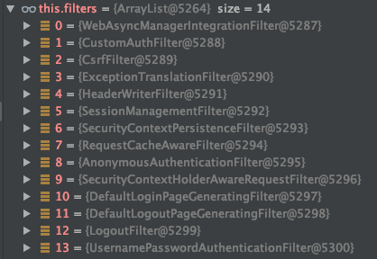

Spring Security: How Filter Chain works
Previous post I have showed how to use Spring Security to implement authentication and authorization, and how to customize it. But there is a question, authentication and authorization are implemented by Security Filters, there are multiple Filters in SecurityFilterChain, each chain can have differect numbers of filters, then how Spring Security manage them? OK, this post we will discuss this problem.
As we know, a SecurityFilterChain is made up of built-in SecurityFilters and our customized Filters. These filters will be executed with some orders. I have showed all built-in filters with ordering in previous post. But how are they organized by Spring Security when application running? Let’s find it.
Creates a project with Spring Initializr by choose ‘spring-boot-starter-security’ and ‘spring-boot-starter-web’. After it is created, import the project with IDE which you favorite and set break point at first line of ‘performBuild’ method of HttpSecurity class like following. Then launch it.
During application launching, it will be paused at our break point. In ‘Debug’ panel, and check the value of ‘comparator’, you can find all built-in filters looks like following
All built-in filters are stored in a Map which key is class name and value is the order. The order of first filter is 100, and step is 100 when adding next. You can find the initializing code in constructure of FilterComparator class.
1 | final class FilterComparator implements Comparator<Filter>, Serializable { |
With above code, we can find the order of these built-in filters are fixed for each application and each time of launching.
Then, we will ask “Whether all of these filters will be executed when authenticating and authorizing or not”? Let’s see the another variable - ‘filters’ - at break point.
This variable stores the fitlers which will be used by current instance of HttpSecurity. It means, only these filters will be executed when doing authentication and authorization for request.
Maybe you already find there is not any filters do the job of authentication. There only has a AnonymousAuthenticationFilter. The reason is we still not indicate which method will be used for authentication.
Then, let’s create WebSecurityConfig class and add ‘form-login’ to it.
1 |
|
And re-launch the application. At the break point, you can find the value of ‘filters’ has changed. It has 13 filters now.
Compares with previous, we can find following 3 filters are added
- UsernamePasswordAuthenticationFilter
- DefaultLoginPageGeneratingFilter
- DefaultLogoutPageGeneratingFilter
‘form-login’ will make the Spring Security added UsernamePasswordAuthenticationFilter to produce the authentication for the request with username and password. And we didn’t indicate the login and logout page, so there are 2 page generating filters are also added.
After above, let’s see what will happen when we add custom filters.
Modify the configure method of WebSecurityConfig, we only add 1 customized filter which named CustomAuthFilter.
1 |
|
Re-launch the application and check the ‘filters’ variable at break point.
We can find the count of filters has changed to 11 and our customized filter is added to index 1 with order 5379. Thus, our filter will be used to do authentication job during there is request from user.
And if you check the ‘comparator’ variable, you will find it also be added into global FilterChain.
In our code, we use ‘addFilterBefore’ to add our customized filter. It means the order of it should be smaller than UsernamePasswordAuthenticationFilter. Checks the picture, the orders of them are
- CustomAuthFilter: 1599
- UsernamePasswordAuthenticationFilter: 1600
OK, how about use ‘addFilterAt’? Following is the result of it. Both of them are 1600.
Could we add both of ‘form-login’ and our customized filter? Yes, of cause. Modify our code again
1 |
|
And re-launch,

Now, the count of filters has changed to 14, both of ‘form-login’ related filters and our own are added. But for this way, we need control the process to make both of them are executed, only one of them will be executed, or others combinations.
To here, do you find a thing that our customized filter always be added to 2nd position whether these is ‘form-login’ or not? Yes, it should be there. It is decided by the process of initializing of HttpSecurity.
When application is launching, WebSecurityConfiguration will call ‘build’ method of AbstractSecurityBuilder class. It will initialize AbstractConfiguredSecurityBuilder and WebSecurityConfigurerAdapter. During initializing of WebSecurityConfigurerAdapter (the instance is our WebSecurityConfig) will add WebAsyncManagerIntegrationFilter to FilterChain. Then, it will call ‘configure’ method. If we override this method and add our customized filters, they will be add at this time. After that, AbstractSecurityBuilder will call ‘configure’ method of AbstractConfiguredSecurityBuilder class, the others filters will be added here.
Now, we already know how the filter chain is created. Back to code at our break point. After it created, it must be sorted with the orders in ‘comparator’ to make the filters can be executed with correct order.
To now, the filter chain is ready to use and SecurityFilterChain will be created.
OK, with above descriptions, do you clear how the code work and how to add our customized filters? If you have any questions or suggestions, please feel free to submit comments to issue.